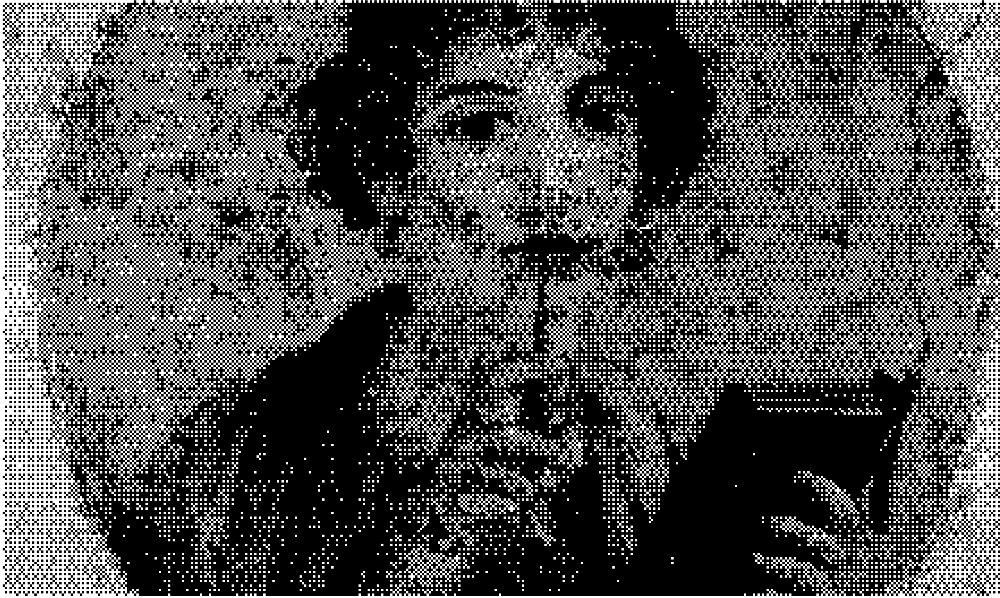
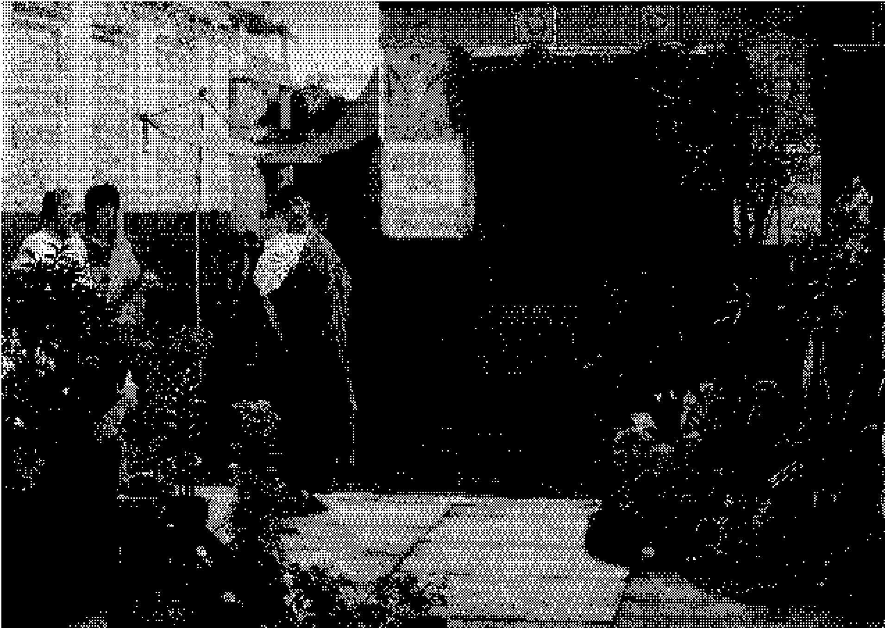
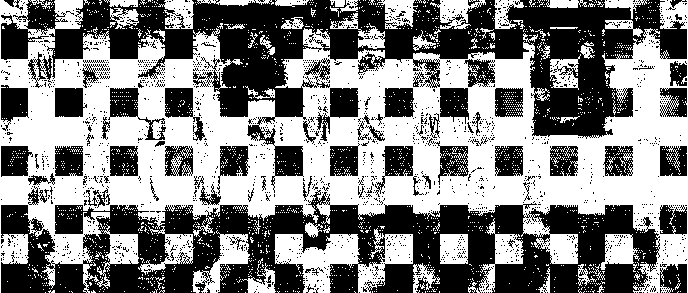
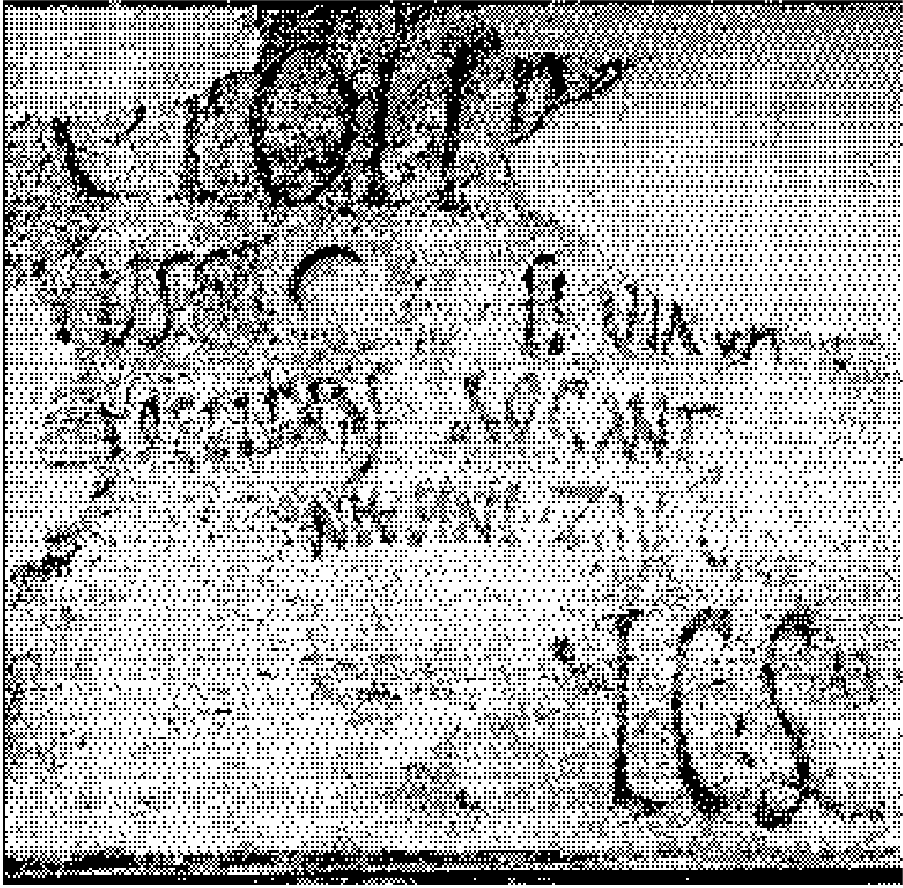

a net from the past
Echoes of the Past: Unveiling Ancient Social Networks
Discover the intricate web
of connections that shaped
civilizations long before
the digital age.
Cavemen had their
own social networks
Journey through the annals of time to the year 4024, where we explore the social connections of our prehistoric ancestors. In a groundbreaking study from the early 21st century, researchers discovered that even cavemen had their own version of social media, a concept that seems almost quaint to us today.
Imagine what the archaeologists of the past millennium thought about the interactions of cavemen before the term ‘social networking’ even existed.
According to an ancient report by the Financial Express, a ‘prehistoric version of Facebook’ was used by Bronze-age tribes to communicate and connect. This study, conducted by a team from Cambridge University at two granite rock sites in what was once Russia and Sweden, revealed that these ancient sites functioned as hubs for emotional expression and communal approval.
Study researcher Mark Sapwell observed, “Like today, people have always wanted to feel connected to each other – this was an expression of identity for these very early societies, before written language.”
The Roman Empire's
Communication Network:
1st Century BC

Long before our age of quantum communication and interstellar messaging, the wealthy citizens of the Roman Empire crafted a complex web of connections through the art of letter writing.
In 1st century BC Rome, affluent individuals would dictate letters to skilled scribes, who meticulously transcribed their words onto reusable wax tablets enclosed in elegant wooden frames. These tablets, capable of being quickly erased and reused, allowed for swift exchanges of information. Messengers darted through the bustling streets of Rome, often delivering responses within mere hours, facilitating rapid communication. Upon receiving a letter, a Roman might read it aloud to family members, friends, or business associates.
These letters were not just personal communications; they were semi-public documents. Secrecy was challenging to maintain, and thus, letters were often written with the understanding that they would be shared with a broader audience. The practice of copying and circulating documents was prevalent. Roman citizens frequently sent copies of their letters to multiple friends, ensuring that their messages reached a wider circle. Prominent figures such as Cicero and other politicians distributed copies of their speeches, allowing their words to echo throughout the empire even if the listeners were not present at the original delivery.
This early form of information dissemination enabled letters, speeches, and articles to quickly permeate Roman society, igniting discussions and debates among the elite. Roman authors, aware of their diverse audiences, tailored their writing styles accordingly. Formal tones were reserved for documents meant for wide circulation, while a more casual style was adopted for private correspondence. This adaptive approach ensured that their messages resonated effectively with their intended recipients.
The Roman Empire's "Acta Diurna": The Original Social Network
the Romans devised a remarkable system for disseminating information: the "Acta Diurna," or Daily Public Records.

the Romans devised a remarkable system for disseminating information: the "Acta Diurna," or Daily Public Records. In ancient Rome, the Acta Diurna was the precursor to modern public announcements and social media updates. Official messages and matters of public interest were inscribed onto slabs of stone, known as albums (from the Latin albus, meaning "white"), which were prominently displayed in town squares and markets. These white boards, chalked or painted, bore decrees, edicts, and various notices in striking black inscriptions, ensuring that the populace remained informed.

Initially focused on political affairs, the scope of the Daily Public Records quickly broadened to encompass a wide range of topics, including gifts, inheritances, funerals, and unusual events. Even seemingly trivial matters often carried significant political weight. For example, divorce, a common subject of the Acta Diurna, had major political implications due to the strategic nature of Roman marriages, which were often used to forge alliances and secure wealth for political careers.
As the philosopher Seneca quipped, "Without divorce, there would be no 'Daily Public Records.'"
Graffiti: Common People's Social Network in Ancient Rome

One notable inscription reads, "SCRIPSIT QUI VOLUIT" — "Whoever wanted to write, wrote."
In ancient Rome, oral dictation, letter exchanges, and the sharing of written news were activities reserved for the elite, often facilitated by skilled slaves. However, the common citizens engaged in a different, more accessible form of media: graffiti. The walls of Roman towns and cities were filled with messages ranging from advertisements and political slogans to personal announcements and artistic illustrations.
These messages were etched into plaster walls, painted, or written with charcoal, transforming public spaces into vast, communal bulletin boards. The traditional Roman house, with its inward-facing layout and doors opening onto inner courtyards, provided ample street-facing walls perfect for graffiti. This created a vibrant, open, and shared media environment accessible to everyone. In Pompeii alone, thousands of graffiti inscriptions have been discovered, revealing the voices of everyday Romans.
